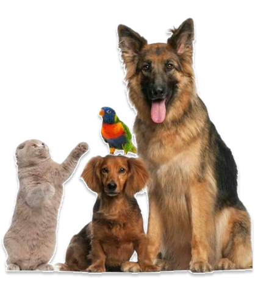
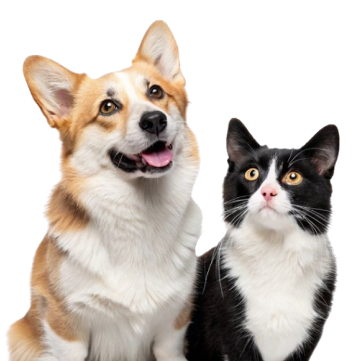

Patinhas felizes,
corações tranquilos
O cuidado que seu pet merece, com
amor em cada detalhe.
Na PetCarinho, cada pet é tratado com atenção, carinho e profissionalismo. Cuidamos da saúde do seu melhor amigo em um ambiente acolhedor, para que ele se sinta seguro — e você, tranquilo.
Agende já sua consulta!Horários de
Segunda a Sexta: 08:00 - 18:00

Quem Somos
A PetCarinho é uma clínica veterinária dedicada à saúde e ao bem-estar dos pets. Com uma equipe apaixonada e qualificada, oferecemos atendimento completo e acolhedor, sempre com carinho e responsabilidade. Aqui, seu pet é tratado como parte da nossa família.
Nossos Serviços
Clínico geral
Consultas para avaliação e cuidados gerais com a saúde do pet
Medicação
Administração segura de remédios com acompanhamento.
Dentista
Higiene e tratamento bucal para dentes saudáveis.

Intravenoso
Reposição e tratamento via aplicação intravenosa.
Banho e Tosa
Higiene, conforto e beleza para o seu pet.
Cirurgias
Procedimentos seguros com foco no bem-estar do pet.
Conheça os latidos e miados dos nossos clientes

"A equipe da PetCarinho foi incrível com o meu cachorro, o Thor. Atendimento rápido, atencioso e
cheio de carinho. Recomendo de olhos fechados!"
— Fernanda Alves, tutora do Thor
"Levei a Luna para uma consulta e saí muito mais tranquila. O cuidado e a paciência da equipe
fizeram toda a diferença. Ela até abanou o rabinho na hora de ir embora!"
— Carlos Menezes, tutor da Luna